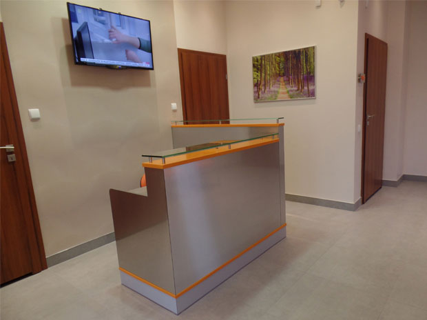

Szanowni Pacjenci!
Witam na stronie naszego gabinetu kardiologicznego.
Jako kardiolog z wieloletnią praktyką lekarską zajmuję się leczeniem chorób układu krążenia,
w szczególności diagnostyką choroby wieńcowej. Oferuję swoim pacjentom diagnostykę i leczenie
nadciśnienia tętniczego, arytmii i niewydolności serca, kardiomiopatii. Służę swoim
doświadczeniem i
wiedzą w zakresie profilaktyki schorzeń kardiologicznych.